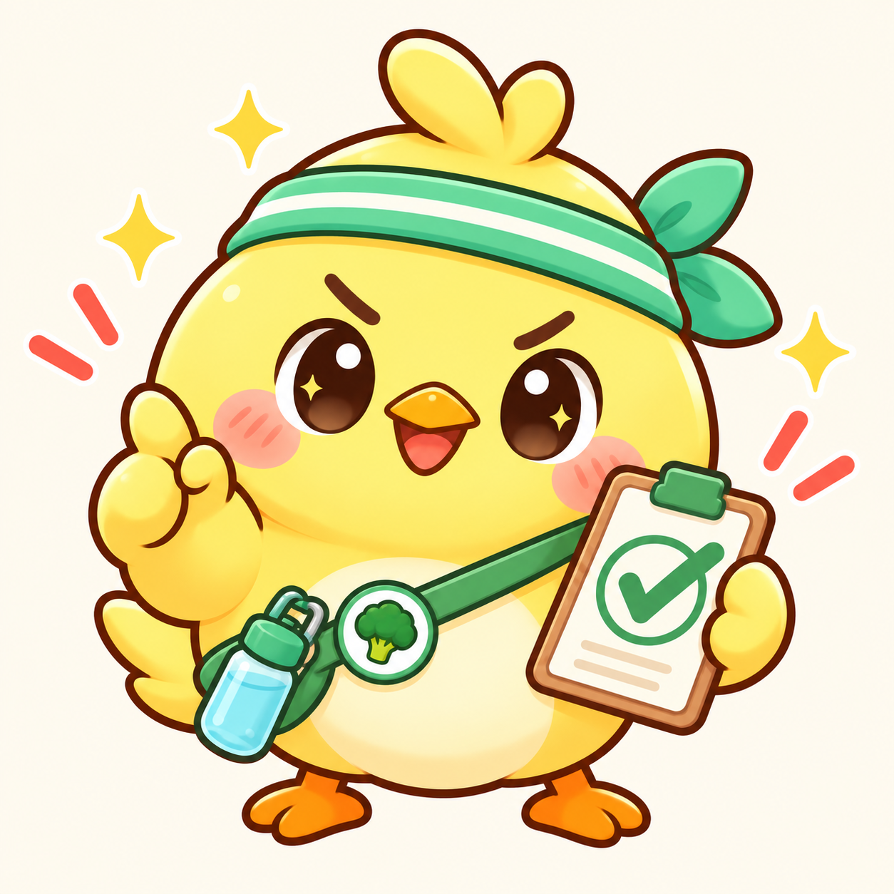

餐點拍一下，記錄輕鬆些
用 AI 照片辨識估算餐點，也能從食物庫挑選或手動輸入。確認份量與內容後，再留下這一餐。

飲控打卡緊迫盯人你的日常記錄小夥伴A LITTLE EVERY DAY
不用換一個生活方式，
從 LINE 開始，記錄你原本就有的每一天。
拍下餐點、記一杯水、留下一次運動。
讓零散的小紀錄，慢慢變成看得見的累積。
飲食 · 蛋白質 · 飲水 · 運動 · 週／月報
一餐一餐，慢慢記就好。
SMALL HABITS, BIG PICTURE
從一餐到一整個月，
記錄、回顧，還有一起努力的朋友。
用 AI 照片辨識估算餐點，也能從食物庫挑選或手動輸入。確認份量與內容後，再留下這一餐。
蛋白質、飲水與運動一起記。依平常活動程度設定蛋白質目標，LINE 提醒也能自行開關。
切換日期範圍、清單與月曆，查看每日明細。週報看生活節奏，月報看長期累積。
透過紀錄牆或私人打卡空間，和朋友一起留下日常。你可以設定是否公開、分享給哪些空間或群組。
YOUR DAYS, AT A GLANCE
歷史頁把趨勢與明細整理好；努力報告則把紀錄天數、運動累積和同期變化放在一起。
看完報告，再決定要下載收藏，還是分享給一起努力的人。
到 LINE 開始累積你的第一週 ↗一眼回顧每天留下的小紀錄
WEEKLY PERFORMANCE
本期觀察
有 3 天記錄運動，共累積 90 分鐘。
功能示意・數字為展示資料
LET’S START SMALL
手機直接點按鈕；在電腦瀏覽時，可以拿手機掃描 QR Code。
在聊天視窗輸入打卡，取得你的個人專屬連結。
開啟頁面，完成基本設定，就可以開始記錄飲食與運動。
個人打卡頁透過專屬連結存取。體重不會顯示在紀錄牆；公開與空間分享可在設定中調整。這個介紹頁只使用展示資料。
AI 辨識與營養數字皆為估算，請依實際份量與營養標示確認。